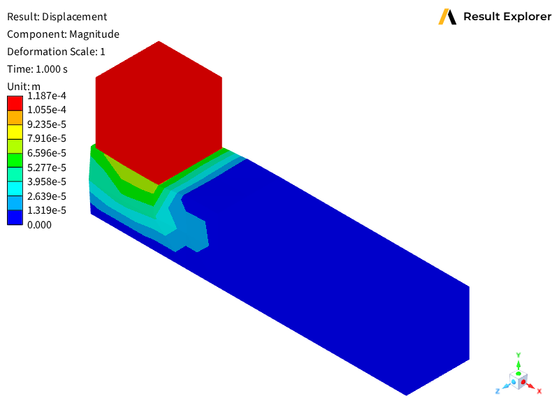
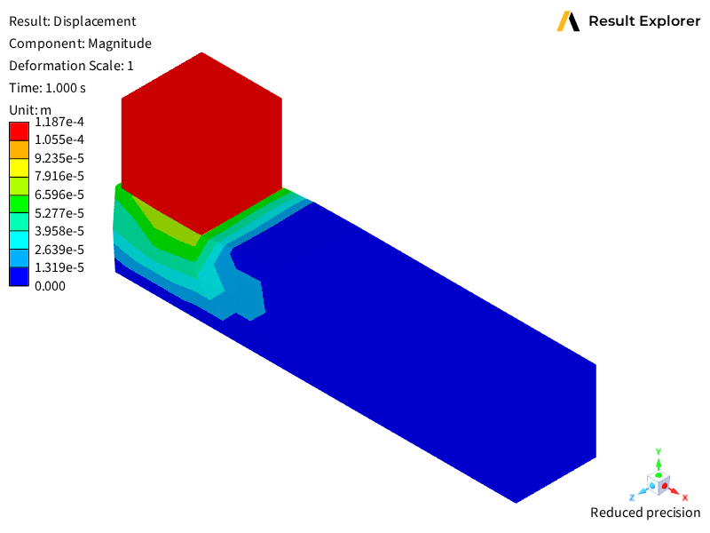

Note
Go to the end to download the full example code.
Export cached view data and reopen a read-only session#
Export a session with cached view data, ZIP compression, and reduced graphics precision. Display a plot, a log, a chart, and convergence trackers in one workspace, then reopen it in read-only mode to visualize the cached results without processing the original result file again.
Read-only solutions serve the data cached in the session. Their plots, charts, and named selections cannot be created, updated, or deleted.
Import dependencies#
import tempfile
from pathlib import Path
from ansys.result_explorer.core import BrowserType, WebLaunchConfig, launch_result_explorer
from ansys.result_explorer.core.examples import (
ExampleKeys,
get_example_file,
get_example_snapshot_settings,
)
from ansys.result_explorer.core.models import GraphicsPrecision
Load and display a result#
Wait for all four views to load before exporting their cached data. Switch to BrowserType.SYSTEM_DEFAULT to inspect the UI while running.
web_config = WebLaunchConfig(browser_type=BrowserType.PLAYWRIGHT_CHROMIUM_HEADLESS)
rx = launch_result_explorer(web_config=web_config)
solution = rx.create_solution(
name="Cached Session Solution",
file_path=get_example_file(ExampleKeys.RST_CP_TRANSIENT),
)
workspace = rx.create_workspace(name="Cached Session Workspace", rows=2, cols=2)
plot_view = next((v for v in solution.plot_views if "Displacement" in v.name), None)
logs_view = solution.logs_view
chart_view = next(iter(solution.chart_views), None)
convergence_view = solution.convergence_trackers_view
assert plot_view is not None, "Displacement plot view not found in solution"
assert logs_view is not None, "Log view not found in solution"
assert chart_view is not None, "Chart view not found in solution"
assert convergence_view is not None, "Convergence trackers view not found in solution"
views = [plot_view, logs_view, chart_view, convergence_view]
for viewport, view in zip(workspace.viewports, views, strict=True):
viewport.set_view(view=view, wait=True)
print(f"Opened view: {view.name}")
workspace.viewports[0].save_snapshot(
file_path="051-cached-session-original.png",
settings=get_example_snapshot_settings(),
)

Opened view: Displacement
Opened view: Logs
Opened view: Min/Max Displacement Over Time
Opened view: Convergence Trackers
Export a compact session with cached data#
Export only this workspace and cache only its visible views. ZIP compression levels range from 0 (uncompressed) to 9 (maximum compression). Reduced graphics precision further reduces the archive size at the cost of numerical precision in the cached graphics.
session_path = Path(tempfile.gettempdir()) / "result_explorer_example" / "cached_session.rxs"
rx.save_session(
session_path,
workspace_ids=[workspace.id],
include_cached_data=True,
only_cache_visible_views=True,
compression_level=6,
precision=GraphicsPrecision.GRAPHICS_PRECISION_REDUCED,
)
print(f"Exported session: {session_path} ({session_path.stat().st_size:,} bytes)")
Exported session: /tmp/result_explorer_example/cached_session.rxs (38,024 bytes)
Remove the original workspace and solution#
Keep their names for lookup because opening a session generates new IDs.
Reopen the session in read-only mode#
Cached data is used for visualization; uncached results are not available for computation in read-only mode.
rx.open_session(session_path, read_only=True)
restored_solution = next(s for s in rx.list_solutions() if s.name == solution_name)
assert restored_solution.read_only, "The restored solution must be read-only"
print(f"Restored solution: {restored_solution.name} (read-only)")
restored_workspace = next(w for w in rx.list_workspaces() if w.name == workspace_name)
restored_viewports = restored_workspace.viewports
assert len(restored_viewports) == 4, "Expected all four viewports to be restored"
for restored_viewport in restored_viewports:
assert restored_viewport.view_id, "Expected the viewport's view to be restored"
restored_viewports[0].save_snapshot(
file_path="051-cached-session-read-only.png",
settings=get_example_snapshot_settings(),
)

Restored solution: Cached Session Solution (read-only)
Stop the instance#
The exported session remains available at session_path for later reuse.
rx.stop()
Total running time of the script: (0 minutes 22.140 seconds)